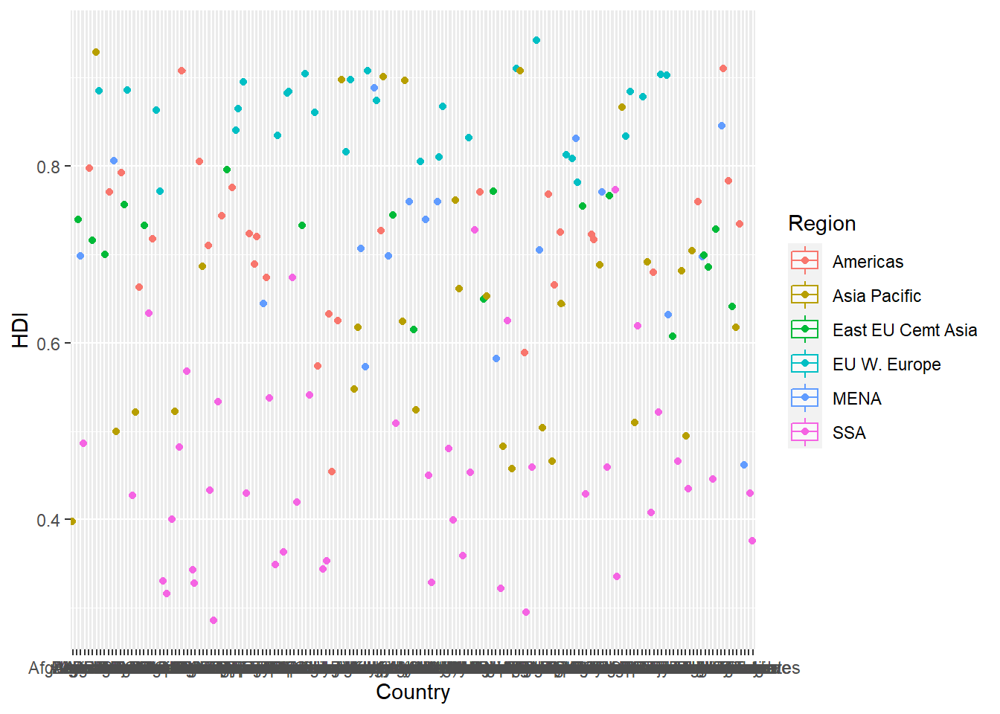

To start, load all the required packages with the following code. Install them if they are not installed yet.
library(tidyverse)
library(knitr)
library(ggplot2)This exercise explores a dataset containing the human development index (HDI) and corruption perception index (CPI) of 173 countries across 6 different regions around the world: Americas, Asia Pacific, Eastern Europe and Central Asia (East EU Cemt), Western Europe (EU W. Europe), Middle East and North Africa and Noth Africa (MENA), and Sub-Saharan Africa (SSA). (Note: the larger CPI is, the less corrupted the country is perceived to be.)
First, we load the data using the following code.
economist_data <- read_csv("https://raw.githubusercontent.com/nt246/NTRES-6100-data-science/master/datasets/EconomistData.csv")economist_data.print(head(economist_data, 10))## # A tibble: 10 x 6
## ...1 Country HDI.Rank HDI CPI Region
## <dbl> <chr> <dbl> <dbl> <dbl> <chr>
## 1 1 Afghanistan 172 0.398 1.5 Asia Pacific
## 2 2 Albania 70 0.739 3.1 East EU Cemt Asia
## 3 3 Algeria 96 0.698 2.9 MENA
## 4 4 Angola 148 0.486 2 SSA
## 5 5 Argentina 45 0.797 3 Americas
## 6 6 Armenia 86 0.716 2.6 East EU Cemt Asia
## 7 7 Australia 2 0.929 8.8 Asia Pacific
## 8 8 Austria 19 0.885 7.8 EU W. Europe
## 9 9 Azerbaijan 91 0.7 2.4 East EU Cemt Asia
## 10 10 Bahamas 53 0.771 7.3 AmericasHDI) and corruption perception index (CPI) with a scatter plot as the following.ggplot(economist_data, aes(x=HDI, y=CPI))+
geom_point()ggplot(economist_data, aes(x=HDI, y=CPI, color='red'))+
geom_point()Region variable, and set the size of points to 2.ggplot(economist_data, aes(x=HDI, y=CPI, color=Region,size=2))+
geom_point()HDI.Rankggplot(economist_data, aes(x=HDI, y=CPI, color=Region, size=HDI.Rank))+
geom_point()ggplot(economist_data, aes(x=CPI, y=HDI, color=Region,size=2))+
geom_point()+
geom_smooth(aes(size=1,col="black"),se=FALSE)ggplot(economist_data, aes(x=CPI, y=HDI, color=Region))+
geom_point()+
geom_smooth( method=lm, se=FALSE)Region in a different facet.ggplot(economist_data, aes(x=CPI, y=HDI, color=Region))+
geom_point()+
facet_wrap(~Region)+
geom_smooth(method=lm, se=FALSE)HDI in each region using density plot. Set the transparency to 0.5ggplot(economist_data, aes(x=HDI,fill=Region)) +
geom_density(alpha=0.5)HDI in each region using histogram and facetting.ggplot(economist_data, aes(x=HDI,fill=Region)) +
geom_histogram()+
facet_wrap( .~ Region)HDI in each region using a box plot. Set the transparency of these boxes to 0.5 and do not show outlier points with the box plot. Instead, show all data points for each country in the same plot. (Hint: geom_jitter() or position_jitter() might be useful.)ggplot(economist_data, aes(x=Country,y=HDI,colour=Region)) +
geom_boxplot(alpha=0.5,outlier.shape = NA) +
geom_point(position = position_jitter())
ggplot(economist_data, aes(x = Region)) +
geom_bar()Answer: Scatter plot is most useful if applying different colors or sizes based on the rankings or category. This type of plot can help better unsupervised learning with clustering data..
This exercise uses the Theoph data frame (comes with your R installation), which has 132 rows and 5 columns of data from an experiment on the pharmacokinetics of the anti-asthmatic drug theophylline. Twelve subjects were given oral doses of theophylline then serum concentrations were measured at 11 time points over the next 25 hours. You can learn more about this dataset by running ?Theoph
Have a look at the data structure
str(Theoph)## Classes 'nfnGroupedData', 'nfGroupedData', 'groupedData' and 'data.frame': 132 obs. of 5 variables:
## $ Subject: Ord.factor w/ 12 levels "6"<"7"<"8"<"11"<..: 11 11 11 11 11 11 11 11 11 11 ...
## $ Wt : num 79.6 79.6 79.6 79.6 79.6 79.6 79.6 79.6 79.6 79.6 ...
## $ Dose : num 4.02 4.02 4.02 4.02 4.02 4.02 4.02 4.02 4.02 4.02 ...
## $ Time : num 0 0.25 0.57 1.12 2.02 ...
## $ conc : num 0.74 2.84 6.57 10.5 9.66 8.58 8.36 7.47 6.89 5.94 ...
## - attr(*, "formula")=Class 'formula' language conc ~ Time | Subject
## .. ..- attr(*, ".Environment")=<environment: R_EmptyEnv>
## - attr(*, "labels")=List of 2
## ..$ x: chr "Time since drug administration"
## ..$ y: chr "Theophylline concentration in serum"
## - attr(*, "units")=List of 2
## ..$ x: chr "(hr)"
## ..$ y: chr "(mg/l)"For the following exercise, transform the data as instructed. Try to use tidyverse functions even if you are more comfortable with base-R solutions. Show the first 6 lines of the transformed data in a table through RMarkdown using the kable() function, as shown above.
Theoph dataset. Do not manually list all the columns to include.Theoph <- as_tibble(Theoph)
kable(head(Theoph))| Subject | Wt | Dose | Time | conc |
|---|---|---|---|---|
| 1 | 79.6 | 4.02 | 0.00 | 0.74 |
| 1 | 79.6 | 4.02 | 0.25 | 2.84 |
| 1 | 79.6 | 4.02 | 0.57 | 6.57 |
| 1 | 79.6 | 4.02 | 1.12 | 10.50 |
| 1 | 79.6 | 4.02 | 2.02 | 9.66 |
| 1 | 79.6 | 4.02 | 3.82 | 8.58 |
Theoph %>% select(starts_with("t"))## # A tibble: 132 x 1
## Time
## <dbl>
## 1 0
## 2 0.25
## 3 0.57
## 4 1.12
## 5 2.02
## 6 3.82
## 7 5.1
## 8 7.03
## 9 9.05
## 10 12.1
## # ... with 122 more rowsWt column to Weight and conc column to Concentration in the Theoph dataset.Theoph = rename(Theoph, Weight = Wt)
Theoph = rename(Theoph, Concentration = conc )Dose greater than 4.5 and Time greater than the mean Time.filter(Theoph, Dose > 4.5 & Time > mean(Time))%>% head()## # A tibble: 6 x 5
## Subject Weight Dose Time Concentration
## <ord> <dbl> <dbl> <dbl> <dbl>
## 1 3 70.5 4.53 7.07 5.3
## 2 3 70.5 4.53 9 4.9
## 3 3 70.5 4.53 12.2 3.7
## 4 3 70.5 4.53 24.2 1.05
## 5 5 54.6 5.86 7.02 7.09
## 6 5 54.6 5.86 9.1 5.9Theoph dataset by Wt from smallest to largest and secondarily by Time from largest to smallest.Theoph %>% arrange(Weight,desc(Time)) %>% head()## # A tibble: 6 x 5
## Subject Weight Dose Time Concentration
## <ord> <dbl> <dbl> <dbl> <dbl>
## 1 5 54.6 5.86 24.4 1.57
## 2 5 54.6 5.86 12 4.37
## 3 5 54.6 5.86 9.1 5.9
## 4 5 54.6 5.86 7.02 7.09
## 5 5 54.6 5.86 5.02 7.56
## 6 5 54.6 5.86 3.5 8.74Quantity that equals to Wt x Dose in the Theoph dataset. This will tell you the absolute quantity of drug administered to the subject (in mg). Replace the Dose variable with Quantity.Theoph = mutate(Theoph, Quantity = Weight * Dose)
Theoph %>%select(Subject, Weight, Quantity,Time, Concentration) %>% head()## # A tibble: 6 x 5
## Subject Weight Quantity Time Concentration
## <ord> <dbl> <dbl> <dbl> <dbl>
## 1 1 79.6 320. 0 0.74
## 2 1 79.6 320. 0.25 2.84
## 3 1 79.6 320. 0.57 6.57
## 4 1 79.6 320. 1.12 10.5
## 5 1 79.6 320. 2.02 9.66
## 6 1 79.6 320. 3.82 8.58conc and sum of the Dose received by each test subject.Show data for the 6 subjects with the smallest sum of Dose as below. Do not define new intermediate objects for this exercise; use pipes to chain together functions.
Theoph %>%
group_by(Subject) %>%
summarize(mean(Concentration), sum(Dose))%>% head()## # A tibble: 6 x 3
## Subject `mean(Concentration)` `sum(Dose)`
## <ord> <dbl> <dbl>
## 1 6 3.53 44
## 2 7 3.91 54.4
## 3 8 4.27 49.8
## 4 11 4.51 54.1
## 5 3 5.09 49.8
## 6 2 4.82 48.4This excercise uses the dataset economics from the ggplot2 package. It was produced from US economic time series data available from http://research.stlouisfed.org/fred2. It descibes the number of unemployed persons (unemploy), among other variables, in the US from 1967 to 2015.
head(economics) %>% kable()| date | pce | pop | psavert | uempmed | unemploy |
|---|---|---|---|---|---|
| 1967-07-01 | 506.7 | 198712 | 12.6 | 4.5 | 2944 |
| 1967-08-01 | 509.8 | 198911 | 12.6 | 4.7 | 2945 |
| 1967-09-01 | 515.6 | 199113 | 11.9 | 4.6 | 2958 |
| 1967-10-01 | 512.2 | 199311 | 12.9 | 4.9 | 3143 |
| 1967-11-01 | 517.4 | 199498 | 12.8 | 4.7 | 3066 |
| 1967-12-01 | 525.1 | 199657 | 11.8 | 4.8 | 3018 |
| date | pce | pop | psavert | uempmed | unemploy |
|---|---|---|---|---|---|
| 1967-07-01 | 506.7 | 198712 | 12.6 | 4.5 | 2944 |
| 1967-08-01 | 509.8 | 198911 | 12.6 | 4.7 | 2945 |
| 1967-09-01 | 515.6 | 199113 | 11.9 | 4.6 | 2958 |
| 1967-10-01 | 512.2 | 199311 | 12.9 | 4.9 | 3143 |
| 1967-11-01 | 517.4 | 199498 | 12.8 | 4.7 | 3066 |
| 1967-12-01 | 525.1 | 199657 | 11.8 | 4.8 | 3018 |
unemploy) though time using the economics dataset shown above. And for this question only, hide your code and only show the plot.## Write your code here## Write your code here